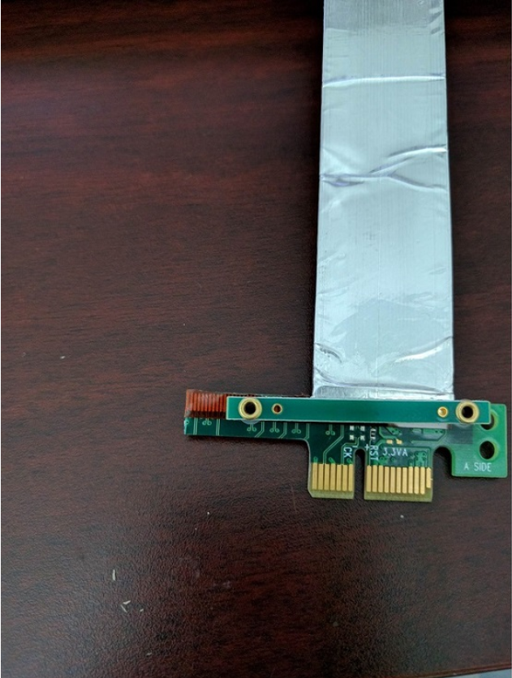
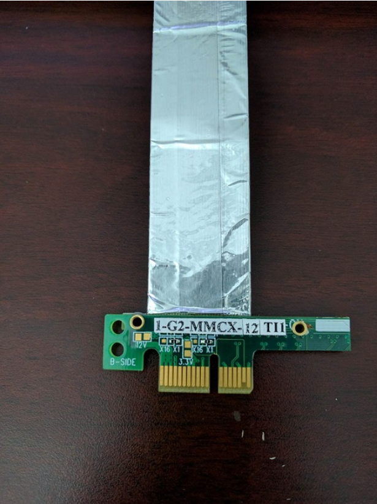

Introduction
This bootloader does SOC initializations and attempts to boot a multicore appimage that is received over PCIe.
This example works in conjunction with the SBL PCIE HOST application that sends over the image to the target board via PCIe. The bootloader then configures the inbound ATU region for receiving the appimage and an outbound ATU region to send out a handshake signal to indicate the bootloader is ready to accept application image.
The host application SBL PCIE HOST on receiving the handshake signal from the bootloader send the application image via PCIe and marks a magic word to indicate transfer complete and marks the relative offset to which image is flashed.
On receiving the multicore appimage, the SBL then parses it, splits it into RPRCs for each core applicable. Each core is then initialized, RPRC image is loaded, entry points are set and the core is released from reset. For more on bootflow/bootloaders, please refer Understanding the bootflow and bootloaders
- Note
- This bootloader application can also be run from other bootmedia (Serial Flash, UART, SD etc), and the bootloader can receive subsequent appimage via PCIe. When not booted from PCIe bootmode, the bootloader needs to do PCIe initialization within the bootloader. Whereas when booting in PCIe bootmode, the bootloader need not reinitialize PCIe and do link training again. In this case the SBL will be reusing the PCIe configuration done by ROM. This can be changed via SysCfg to use ROM configuration or not use ROM configuration, i.e the bootloader is executed from PCIe bootmode or other bootmodes.
Supported Combinations
| Parameter | Value |
| CPU + OS | r5fss0-0 nortos |
| Toolchain | ti-arm-clang |
| Board | am64x-evm |
| Example folder | examples/drivers/boot/sbl_pcie |
HW Setup
- Note
- Make sure you have setup the EVM with cable connections as shown here, EVM Setup. In addition do below steps.
AM64X-EVM
- For connecting two board in RC and EP mode a specialized cable as below is required
- This cable can be obtained from Adex Electronics (https://www.adexelec.com).
- Modify the cable to remove resistors in CK+ and CK- in order to avoid ground loops (power) and smoking clock drivers (clk+/-).
- The ends of the modified cable should look like below:
A side

PCIe cable A side end 1 |

PCIe cable A side end 2
|
B side

PCIe cable B side end 1 |

PCIe cable B side end 2
|
Steps to Run the Example
Since this is a bootloader, the example will be run every time you boot an application using this example. ROM will be receiving the bootloader over PCIe and SBL will be receiving appimage via PCIe. This example can be build using makjefile or build via CCS by importing as a project.
- When using CCS projects to build, import the CCS project for the required combination and build it using the CCS project menu (see Using SDK with CCS Projects).
- When using makefiles to build, note the required combination and build using make command (see Using SDK with Makefiles)
- The example needs to work in conjunction with SBL PCIE HOST application that sends the images to ROM and SBL over PCIe.
- The target board is booted in PCIe boot mode, and the host side application is run on the other board connected.
See Also
BOOTLOADER
Sample Output
DMSC Firmware Version 8.5.3--v08.05.03 (Chill Capybar
DMSC Firmware revision 0x8
DMSC ABI revision 3.1
[BOOTLOADER_PROFILE] Boot Media : PCIE
[BOOTLOADER_PROFILE] Boot Image Size : 221 KB
[BOOTLOADER_PROFILE] Cores present :
[BOOTLOADER PROFILE] SYSFW init : 12250us
[BOOTLOADER PROFILE] System_init : 25723us
[BOOTLOADER PROFILE] Drivers_open : 46us
[BOOTLOADER PROFILE] Sciclient Get Version : 10043us
[BOOTLOADER PROFILE] Appimage reception via PCIE : 492024us
[BOOTLOADER PROFILE] CPU Load : 75179us
[BOOTLOADER_PROFILE] SBL Total Time Taken : 615267us
Image loading done, switching to application ...

 1.8.20
1.8.20